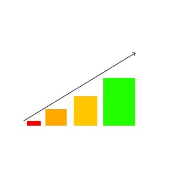

Top five methods to increase game performance in Unity

There are loads of way to help increase performance for your Unity projects, these are the five methods that I found most helpful.
Sprite/Asset packing can be easily utilized to cut down on file sizes and draw calls whilst building game objects.
Managing Level of detail for game objects at a distance is super helpful for cutting down on the amount of effort your machine needs to put into rendering.
By default Unity uses frustrum culling which only renders what is in the camera's view, using occlusion culling will allow you to render only what the player actually sees.
Memory management in DOTS will be the new way we manage to keep games running well and moving forward on our ever slowing hardware.
DOTS consists of three seperate pillars which will change the way we make and run games all together. The C# job system, ECS, and the burst complier. Without each of these it would only function at half the efficiency.
| Type of optimization | Difficulty to implement | Effectiveness |
|---|---|---|
| Sprite/Asset Packing | Easy | Least effective | Level of Detail | Easy | Moderately effective |
| Frustrum culling | Moderate | Very effective |
| Memory management | Hard | Most effective | DOTS | Moderate | Very effective |